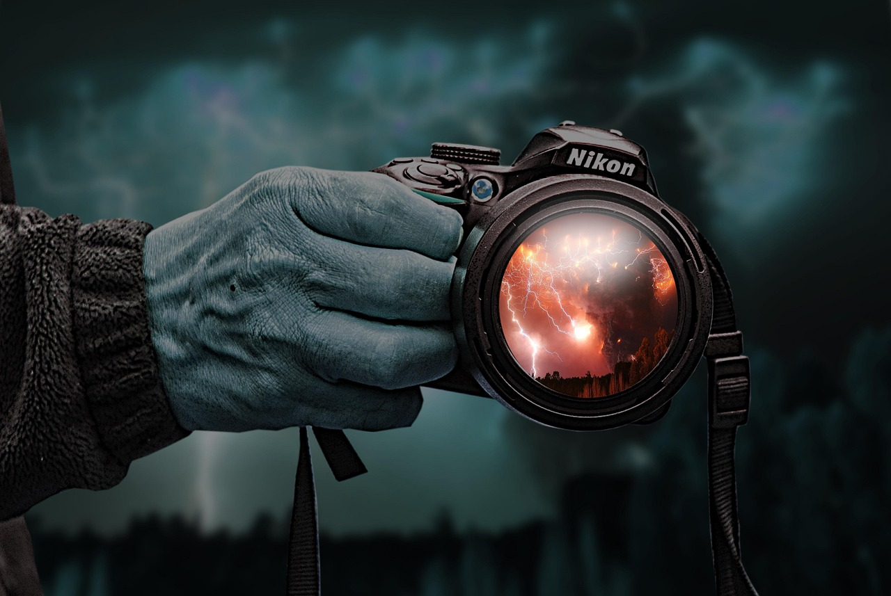

La fotografía abstracta, a veces llamada fotografía no objetiva, experimental o conceptual, es un medio de representar una imagen visual que no tiene una asociación inmediata con el mundo de los objetos y que ha sido creada mediante el uso de equipos, procesos o materiales fotográficos.
En este video se explora la influencia del arte abstracto en la fotografía contemporánea. Descubre cómo los fotógrafos juegan con la luz, las formas y los colores para crear imágenes impactantes.